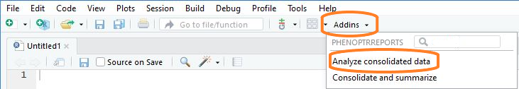
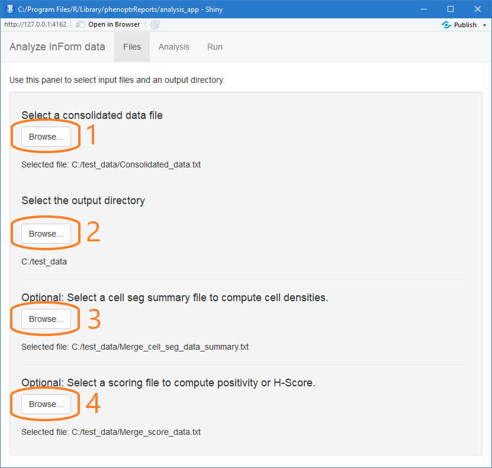
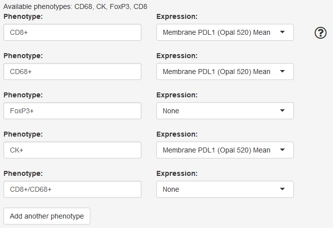
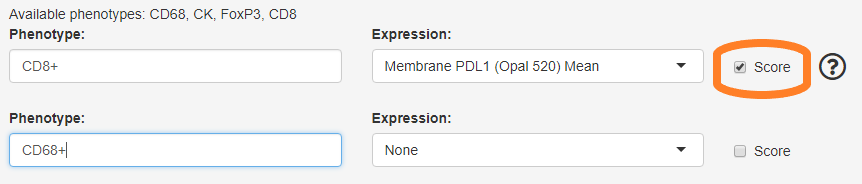
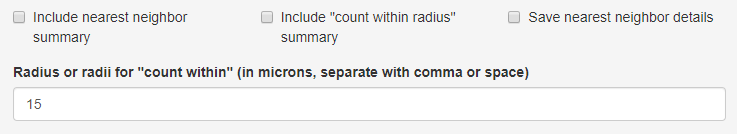
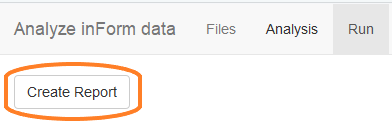

Analysis overview
A phenoptrReports analysis aggregates cell phenotypes and marker expression for each slide and tissue category in an experiment. An analysis can aggregate phenoype counts, density, mean expression and H-Score.
There are three parts to creating an analysis:
- select the input files
- define the desired analysis
- create the final reports
Data requirements
Consolidated cell seg data
The primary source data for the analysis report is a consolidated data file created by the Consolidate and summarize app.
If you have only one merge file, from a single inForm project, you should still use Consolidate and summarize to convert the file to the format used by the analysis report.
Detailed steps
Start the analysis app
Choose “Analyze consolidated data” from the RStudio Addins menu to open the analysis app.

Select input files
The first tab in the analysis app is Files. Use this tab to select the input files and output directory for your analysis.
First, click the first Browse… button to select the consolidated data file created in the consolidation app. This is the most important input file and the only one that is required.
Next, click the second Browse… button. Select a directory to contain the results of the analysis.
To include cell densities in the analysis, click the third Browse… button and select a merged summary cell seg data file. The summary cell seg file includes information about tissue category area which is needed by the density calculation.
If your analysis includes H-Score, click the last Browse… button to select a score data file. The analysis will use the thresholds and markers in the score file to compute H-Score for each slide in the experiment.

Define the analysis
The second tab in the analysis app is Analysis. It contains sections where you select tissue categories, phenotypes, and markers of interest.
Slide ID prefix
The Slide IDs in your data file may contain prefix information that is not wanted in the final report. Any text you enter here will be removed from the start of the Slide IDs. The text can be either an exact match or a regular expression. Exact matches will match from the start of the Slide ID. Regular expressions will match anywhere in the Slide ID; to match only from the start, start the regular expression with ^.
Leave this field blank to use the existing Slide IDs unchanged.

Define phenotypes and markers
In this section you define the phenotypes and markers of interest. Every phenotype defined in this section will be included in the Cell Counts, Cell Percents and Cell Density sections of the final report. Phenotypes for which you select an expression marker will also be included in the Mean Expression section of the report.
The available phenotypes are shown at the top of the section. These are the phenotype names you can use in your phenotype definitions.
In the “Phenotype” box, enter the definition of a phenotype of interest. You can enter a single or multiple phenotype.
To analyze a single phenotype, enter the phenotype name with a + or -, for example CD3+ or CD8-.
To analyze a multiple phenotype, combine individual phenotype definitions with slash (/) or comma (,). Combine with a slash to define double positive phenotypes, for example CD3+/CD8+. Combine with a comma to allow either phenotype, for example CD68+,CD163+.
To compute mean expression of a marker for a phenotype, select the marker of interest in the Expression drop-down.
To compute expression of multiple markers for a single phenotype, add a duplicate phenotype with the second marker selected. To compute expression of a marker for all cells, enter “Total Cells” as the phenotype.

H-Score for individual phenotypes
If you selected a score summary file in the Files tab, the phenotype selections will include a “Score” checkbox. If this is checked, the generated report will include H-Score for the selected phenotype in addition to the H-Score for all cells.

Select options for spatial analysis
In this section, select the types of spatial analysis to include.
Include nearest neighbor summary If this is selected, the generated report will include a table summarizing nearest neighbor distances between every pair of phenotypes and heatmap visualizations of the mean distances.
Include “count within radius” summary If this is selected, the generated report will include a table summarizing, for each pair of phenotypes, the number of cells of a phenotype having a cell of a second phenotype within a specified radius. Enter the radius or radii of interest in the text field.
-
Save nearest neighbor / count within details
- If this is selected with “Include nearest neighbor summary”, the analysis will write a
nearest_neighbors.txtfile containing, for each cell, the distance to the nearest cell of each phenotype and the cell ID of the cell. - If this is selected with “Include ‘count within radius’ summary”, the analysis will write a
count_within.txtfile containing, for each cell, the count of cells within the specified radii. - These files may be useful for more detailed statistical analysis of spatial relationships.
- If this is selected with “Include nearest neighbor summary”, the analysis will write a

Create reports
The final tab in the analysis app is the Run tab. Click “Create Report” to run the displayed R script to create the final reports. Wait for the script to run; when it is finished, the app will close.
The script computes aggregated statistics, writes them to an Excel workbook, and creates visualizations of the results in a Word document. The R script is saved in the output directory and may be inspected, modified or re-run if needed.
